Objetivo
Este reporte documenta la Actividad 17, «La memoria del crimen: extracción de evidencia de un volcado RAM». El objetivo es analizar el volcado de memoria OtterCTF.vmem con la herramienta Volatility 2.6.1 para identificar evidencia digital sobre un presunto cibercriminal: el sistema operativo, las cuentas y contraseñas, la actividad de red, el registro, los procesos en ejecución, los correos utilizados y la cartera de criptomoneda del presunto rescate. Cada paso se documenta con su comando, su captura de pantalla, su resultado y la razón técnica por la que se usa; al final se relacionan los hallazgos con el caso y se proponen líneas de investigación.
La memoria volátil (RAM) guarda lo que el equipo está haciendo en el momento de la captura: procesos, conexiones de red, credenciales en claro y contenido del navegador. Estos datos se pierden al apagar el equipo, por eso son los primeros que se recolectan según el orden de volatilidad (RFC 3227) y por eso un volcado de RAM puede revelar información que no existe en el disco.
Hechos del caso. Elementos de la FGM obtuvieron un volcado de memoria de un presunto cibercriminal vinculado con el trasiego de estupefacientes y el rapto de personas, que engancha a sus víctimas mediante ingeniería social en redes sociales. Se autodenomina «Morty»; en un grupo secreto de Telegram un usuario «Ricky» pide 0.0000043 BTC a quien quiera unirse a «S0_Just_M0v3_Socy», que se presume es una botnet. Además, SEDENE aportó las iniciales FAF3 y CNDI aportó las iniciales TFE, relacionadas con los servidores «Lunar» que se usan para publicitar víctimas. La tabla 1 resume qué se averiguó en cada punto y con qué comando.
| Punto | Comando | Qué permite averiguar |
|---|---|---|
| 1 y 2 | imageinfo | Perfil del sistema (SO y arquitectura), fecha y hora de captura |
| 3 | hashdump, lsadump | Cuentas locales, hashes de contraseñas y secretos de la LSA |
| 4 y 8 | netscan | Conexiones y puertos de red, direcciones IP local y remota |
| 5 | hivelist | Archivos (hives) del Registro cargados en memoria |
| 6 | printkey | Valores de una llave del Registro (nombre del equipo) |
| 7 | pstree | Procesos en ejecución y su relación padre-hijo |
| 9 | strings + grep | Cadenas de texto en la RAM (correos, navegador) |
| 10 | memdump + strings | Memoria de un proceso y búsqueda de la cartera BTC |
Desarrollo
Preparación del entorno
El análisis se realizó en Kali Linux ejecutado en VirtualBox. La imagen OtterCTF.vmem (2.0 GiB) se colocó en una carpeta compartida con la máquina virtual, por lo que su ruta es /media/sf_Actividad_17/OtterCTF/OtterCTF.vmem (figura 1).
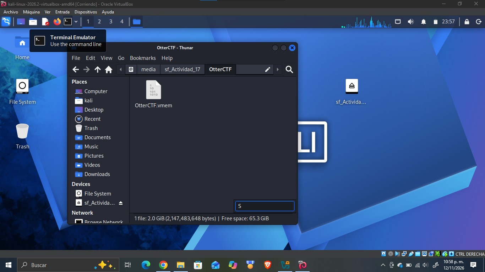
Volatility se descargó desde el repositorio oficial de Volatility Foundation y se entró a su directorio (figura 2):
sudo git clone https://github.com/volatilityfoundation/volatility.git
cd volatility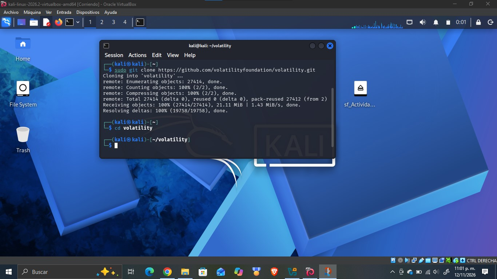
Volatility 2.6.1 funciona con Python 2.7, que está obsoleto en las versiones actuales de Kali, por lo que se ejecuta con el comando python2. Además, la primera ejecución mostró unas 20 líneas «Failed to import … No module named Crypto.Hash» y «name distorm3 is not defined» (figura 4). No son un error del análisis: indican que varios complementos opcionales (como hashdump o lsadump, que descifran datos del Registro) necesitan las bibliotecas de criptografía pycrypto y distorm3, que no estaban instaladas. Para corregirlo se ejecutaron los siguientes comandos (figura 3):
sudo apt update
sudo apt install python2-dev build-essential libssl-dev -y
curl https://bootstrap.pypa.io/pip/2.7/get-pip.py -o get-pip.py
sudo python2 get-pip.py
sudo python2 -m pip install --upgrade setuptools wheel
sudo apt update && sudo apt install libcrypt-dev -y
sudo python2 -m pip install pycryptodome distorm3
python2 ~/volatility/vol.py --info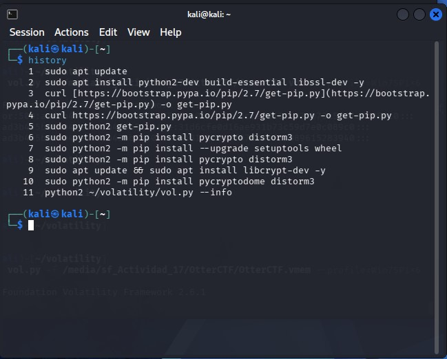
En el historial se ven intentos repetidos: primero se probó pycrypto, un paquete obsoleto que suele fallar al compilarse, y finalmente se instaló libcrypt-dev y se sustituyó por pycryptodome, compatible con el mismo código. Con las dependencias instaladas, todos los comandos posteriores a imageinfo se ejecutaron sin esas líneas de falla.
Punto 1. Imagen de memoria y hora local
Primero se identificó el perfil y las marcas de tiempo del volcado con el complemento imageinfo (figuras 4 y 5):
python2 vol.py -f /media/sf_Actividad_17/OtterCTF/OtterCTF.vmem imageinfo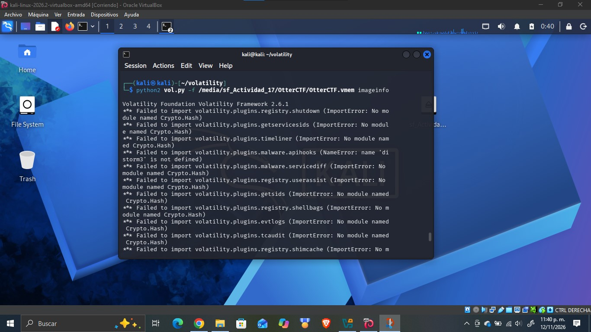
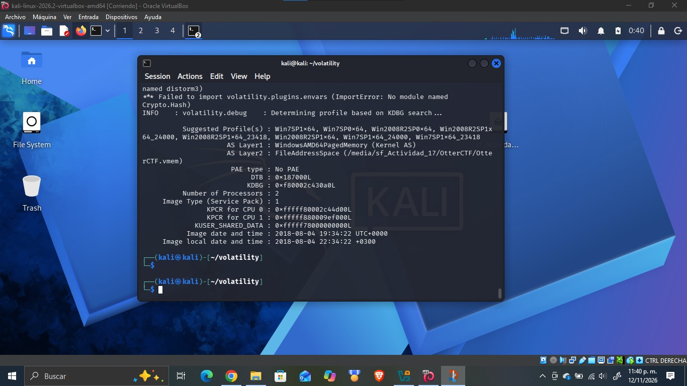
Resultado. La marca de tiempo local del volcado es «Image local date and time: 2018-08-04 22:34:22 +0300», que corresponde a las 19:34:22 en UTC (Image date and time: 2018-08-04 19:34:22 UTC+0000).
Cómo funciona. imageinfo busca en la memoria el bloque KDBG (Kernel Debugger Block), una estructura del kernel de Windows que permite reconocer el sistema operativo y proponer los perfiles compatibles; ese perfil es indispensable porque el resto de los complementos lo necesitan (--profile) para interpretar correctamente las estructuras de la memoria. La hora de la imagen se toma de KUSER_SHARED_DATA, la página del kernel donde Windows guarda la hora del sistema y su zona horaria.
Análisis de «Image local date and time». La diferencia de +03:00 respecto a UTC es la zona horaria configurada en el equipo del sospechoso. En agosto, un desfase de +3 horas corresponde, entre otras, a la hora de verano de Israel, lo cual es consistente con el campo country: «IL» que aparece en la sesión de correo recuperada de la memoria (Punto 9). Esto no prueba la ubicación, ya que otras regiones también usan UTC+3 y la configuración de zona horaria puede modificarse, pero orienta la investigación. Además, la fecha del 4 de agosto de 2018 a las 19:34:22 UTC marca el momento de la captura y sirve de referencia para ordenar en el tiempo los demás hallazgos: todo proceso o conexión se creó antes de ese instante.
Punto 2. Sistema operativo y arquitectura
El mismo comando imageinfo (figura 5) permite identificar el sistema operativo. El resultado sugiere los perfiles Win7SP1x64 (con sus variantes de compilación 24000 y 23418) y Win2008R2SP1x64. Los datos de apoyo son: Image Type (Service Pack): 1, PAE type: No PAE, dos procesadores y espacio de direcciones WindowsAMD64PagedMemory.
Punto 3. Contraseña del perfil
Se usaron dos complementos que leen los archivos del Registro cargados en memoria. Primero, hashdump (figura 6):
python2 vol.py -f /media/sf_Actividad_17/OtterCTF/OtterCTF.vmem --profile=Win7SP1x64 hashdump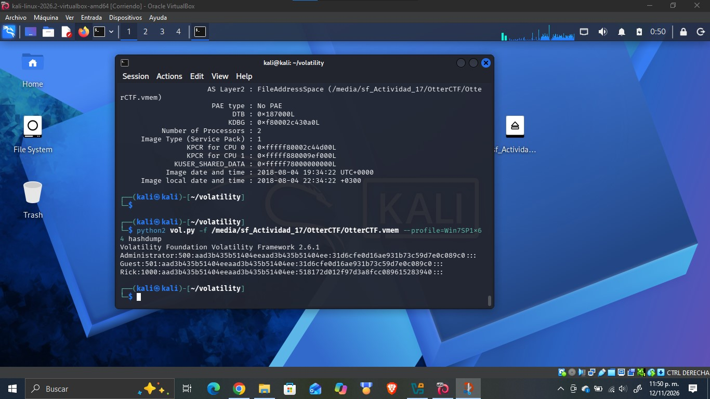
Después, lsadump (figura 7):
python2 vol.py -f /media/sf_Actividad_17/OtterCTF/OtterCTF.vmem --profile=Win7SP1x64 lsadump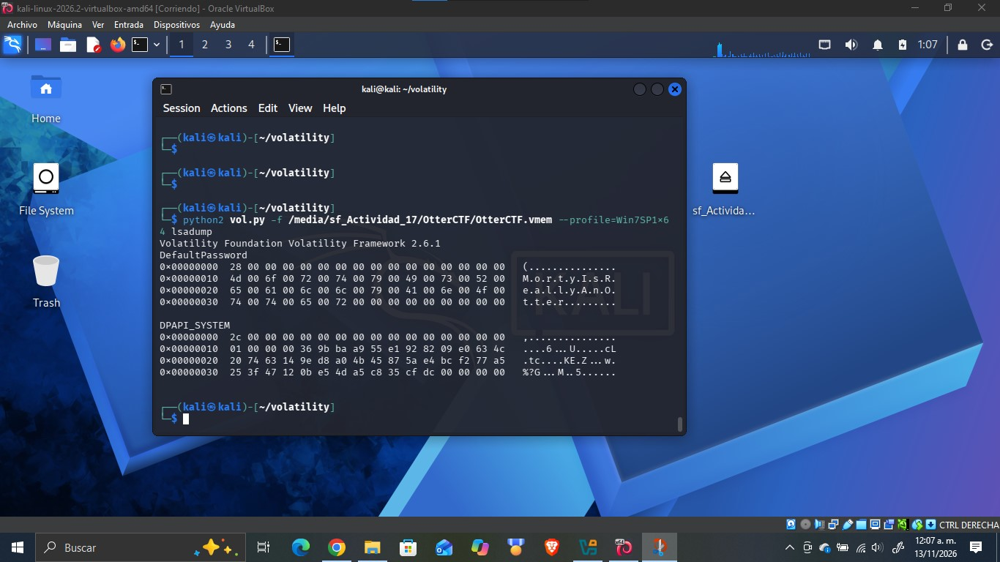
Resultado. hashdump muestra tres cuentas: Administrator (RID 500), Guest (501) y Rick (1000). Las dos primeras tienen el hash NTLM 31d6cfe0d16ae931b73c59d7e0c089c0, que corresponde a una contraseña vacía; la cuenta del usuario Rick tiene el hash NTLM 518172d012f97d3a8fcc089615283940. lsadump muestra el secreto DefaultPassword, cuyos bytes están codificados en UTF-16 y se leen en la columna derecha: M.o.r.t.y.I.s.R.e.a.l.l.y.A.n.O.t.t.e.r, es decir, MortyIsReallyAnOtter.
Cómo funciona. hashdump lee la base de datos SAM, donde Windows guarda los hashes de las cuentas locales (cifrados con la clave SYSKEY del hive SYSTEM), y los muestra con el formato usuario:RID:LM:NTLM. El hash LM aad3b435b51404eeaad3b435b51404ee es el valor vacío, señal de que el hash LM está deshabilitado. lsadump lee los secretos de la LSA, en el hive SECURITY; el secreto DefaultPassword existe cuando el sistema tiene configurado el inicio de sesión automático (Winlogon) y guarda la contraseña de esa cuenta, por lo que el equipo iniciaba sesión sin pedirla, tal como describe el caso. El otro secreto, DPAPI_SYSTEM, es material de claves del sistema para DPAPI.
Punto 4. Direccionamiento IP del equipo
Para conocer la actividad de red se usó el complemento netscan (figuras 8 y 9):
python2 vol.py -f /media/sf_Actividad_17/OtterCTF/OtterCTF.vmem --profile=Win7SP1x64 netscan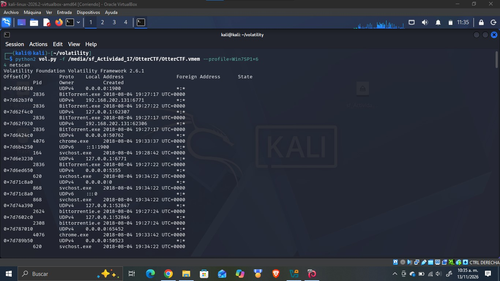
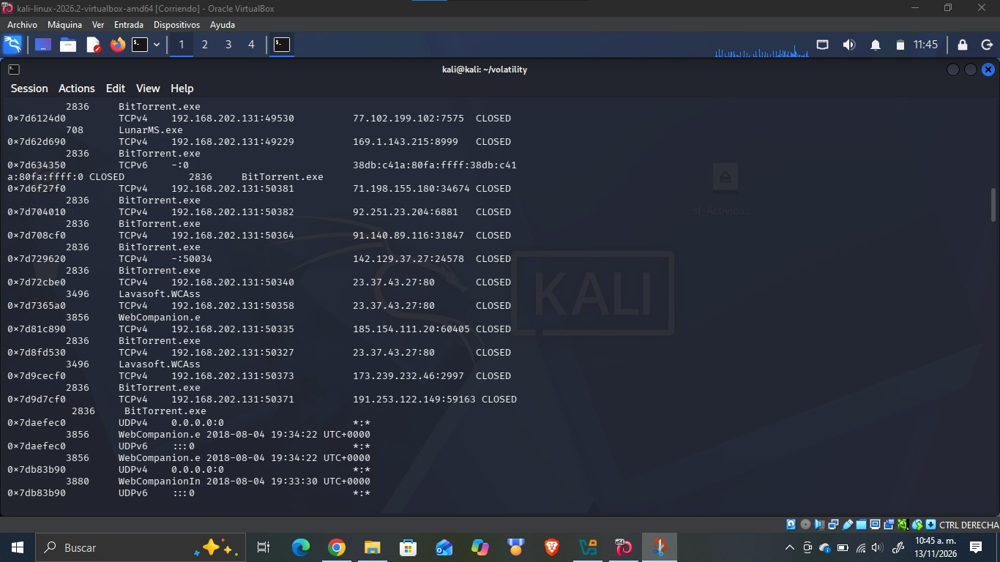
Resultado. Las conexiones TCP salientes visibles salen de la dirección local 192.168.202.131, que es la IP del equipo del cibercriminal al atacar. Es una dirección privada (rango 192.168.x.x) asignada dentro de una red interna; hacia internet saldría a través de un enrutador o NAT, así que la IP pública no aparece en este volcado. Las conexiones pertenecen a BitTorrent.exe (múltiples pares), LunarMS.exe, Lavasoft WebCompanion y chrome.exe.
Cómo funciona. netscan busca en la memoria los objetos que el kernel usa para los puertos y las conexiones TCP y UDP (en Windows Vista y posteriores), por lo que muestra también conexiones ya cerradas (estado CLOSED) y los sockets en escucha, con el proceso propietario (PID y nombre). Es útil porque deja ver con quién se comunicó el equipo aunque la conexión ya haya terminado.
Punto 5. Registro del sistema
Para ver los archivos del Registro cargados en memoria se usó hivelist (figura 10):
python2 vol.py -f /media/sf_Actividad_17/OtterCTF/OtterCTF.vmem --profile=Win7SP1x64 hivelist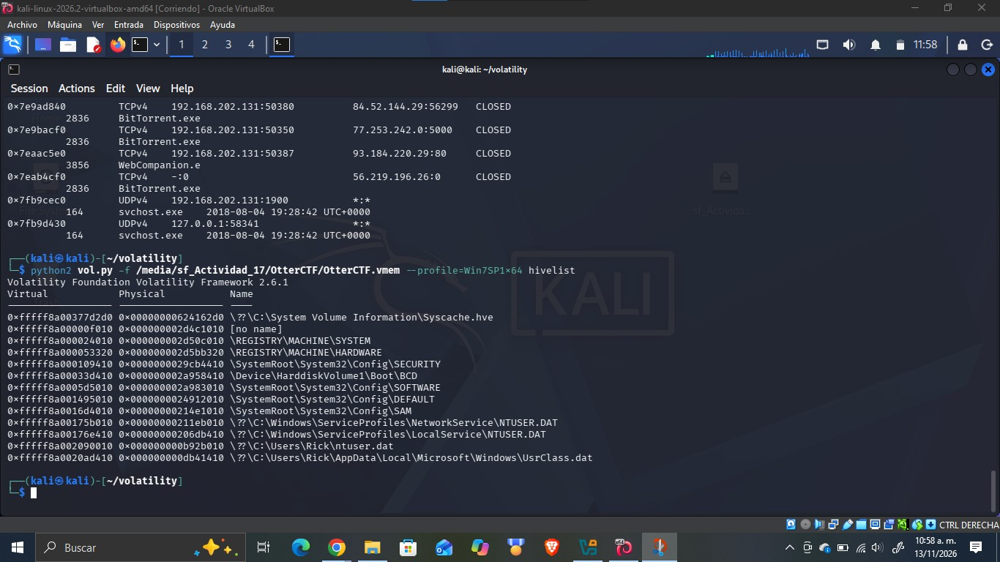
Resultado. Se listan los hives SYSTEM, HARDWARE, SECURITY, SOFTWARE, DEFAULT, SAM y BCD, los de los servicios NetworkService y LocalService, Syscache.hve, y los del usuario Rick: C:\Users\Rick\ntuser.dat y UsrClass.dat. La tabla 2 resume qué contiene cada uno.
| Hive | Qué contiene |
|---|---|
SYSTEM | Configuración del equipo: nombre del ordenador, servicios, controladores, dispositivos USB y zona horaria |
SOFTWARE | Programas instalados, versiones y llaves de inicio automático (Run) |
SAM | Cuentas locales y hashes de sus contraseñas (se usa en hashdump) |
SECURITY | Políticas de seguridad y secretos de la LSA (se usa en lsadump) |
NTUSER.DAT (Rick) | Configuración y actividad del usuario: documentos recientes, programas ejecutados, inicio automático por usuario |
UsrClass.dat (Rick) | Asociaciones de archivos y carpetas visitadas (ShellBags) del usuario |
¿Por qué es útil conocer el Registro del sistema comprometido? Porque el Registro es la base de datos donde Windows y los programas guardan su configuración y dejan rastros de uso. Permite identificar cuentas y credenciales, el software instalado, los programas que se inician con el sistema (persistencia del atacante), los dispositivos USB conectados, los documentos y programas usados por cada usuario y datos de red, lo que ayuda a reconstruir lo que hizo el usuario y a fechar los hechos, ya que cada llave guarda su fecha de última modificación. En un volcado de memoria, además, el Registro permite extraer información que a veces ya no está en disco, y la lista de hives da las direcciones necesarias para consultar llaves concretas con printkey (Punto 6).
Punto 6. Nombre del ordenador
El nombre del equipo está en la llave ComputerName del hive SYSTEM; se consultó con printkey (figura 11):
python2 vol.py -f /media/sf_Actividad_17/OtterCTF/OtterCTF.vmem --profile=Win7SP1x64 printkey -K "ControlSet001\Control\ComputerName\ComputerName"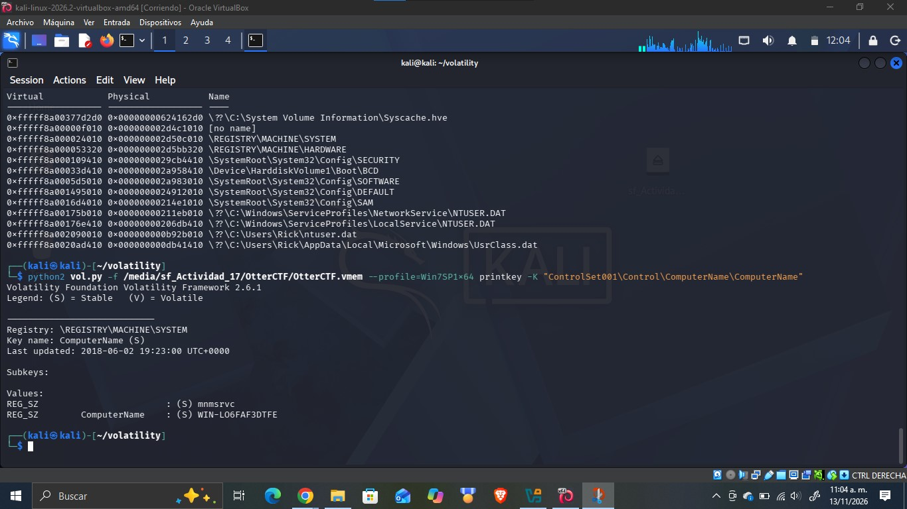
Resultado. El valor ComputerName es WIN-LO6FAF3DTFE. La llave registra su última modificación el 2018-06-02 a las 19:23:00 UTC, es decir, el nombre se fijó unos dos meses antes de la captura (4 de agosto de 2018), lo que es compatible con la instalación o configuración del equipo.
Punto 7. Procesos relevantes
Para ver los procesos y su jerarquía se usó pstree (figuras 12 y 13):
python2 vol.py -f /media/sf_Actividad_17/OtterCTF/OtterCTF.vmem --profile=Win7SP1x64 pstree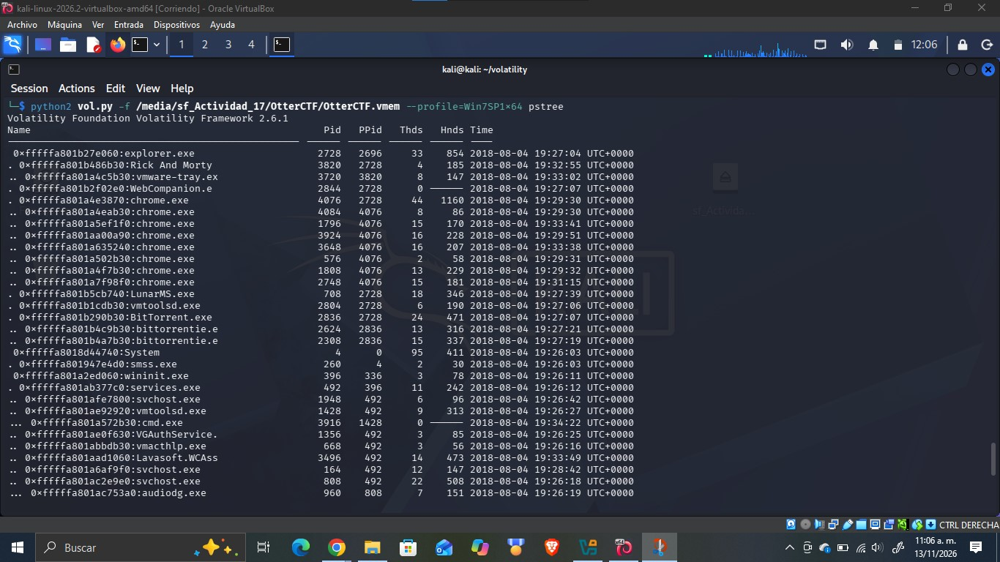
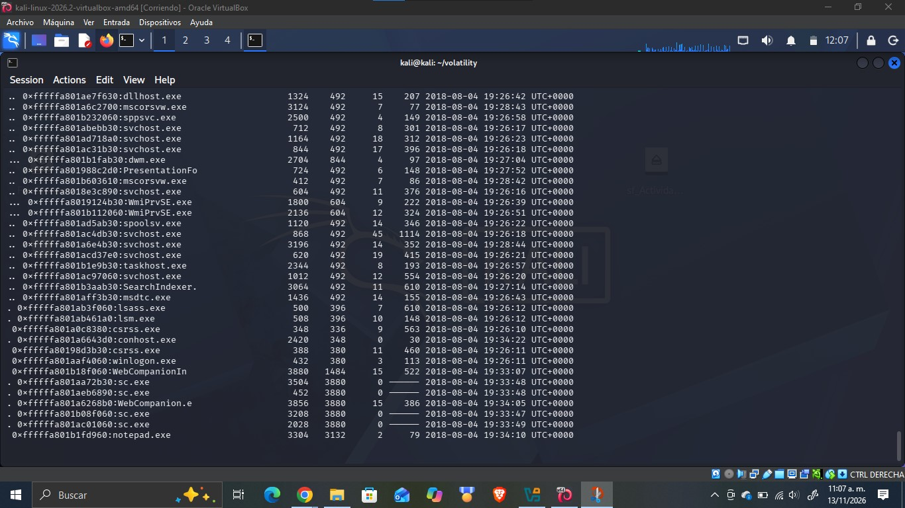
Cómo funciona. pstree muestra los procesos como árbol: cada línea tiene el nombre, el PID, el PPID (proceso padre), los hilos, los manejadores y la hora de inicio. Los procesos que cuelgan de explorer.exe fueron iniciados por el usuario desde el escritorio, así que sirven para saber qué ejecutó la persona. También sirve para detectar anomalías, como un programa legítimo cuyo padre no es el esperado.
De todos los procesos se eligieron tres (tabla 3):
| Proceso | PID / PPID | Inicio (UTC) | Por qué es importante |
|---|---|---|---|
| A. vmware-tray.exe | 3720 / 3820 | 2018-08-04 19:33:02 | Se hace pasar por la utilidad de VMware, pero su padre es «Rick And Morty» (3820), un programa sin relación con VMware: suplantación de un proceso legítimo. Es el proceso 3720 del enunciado y contiene la cartera BTC (Punto 10). |
| B. LunarMS.exe | 708 / 2728 | 2018-08-04 19:27:39 | Lanzado por el usuario desde explorer.exe; mantiene la conexión TCP al servidor 77.102.199.102:7575 (Punto 8). Se relaciona con los servidores «Lunar» del caso. |
| C. BitTorrent.exe | 2836 / 2728 | 2018-08-04 19:27:07 | Cliente torrent con sus procesos hijos bittorrentie.exe (2624 y 2308) y muchas conexiones a pares; es el servicio Torrent que se sospecha usa para enviar videos de las víctimas. |
Además se observa Lavasoft WebCompanion (PIDs 3856 y 3880), software publicitario que suele instalarse junto con otros programas, y varios chrome.exe (PID padre 4076), consistentes con el uso del navegador para el correo web (Punto 9).
Punto 8. Conexión al servidor malicioso
La conexión al servidor se identificó en el resultado de netscan (figura 9). Cada conexión ocupa dos líneas: la primera con el protocolo y las direcciones y la segunda con el PID y el proceso propietario. La conexión de LunarMS.exe (PID 708) es la siguiente:
0x7d6124d0 TCPv4 192.168.202.131:49530 77.102.199.102:7575 CLOSED
708 LunarMS.exeResultado. La dirección IP del servidor es 77.102.199.102 y el puerto remoto es 7575/TCP (puerto local 49530). La conexión aparece en estado CLOSED: ya terminó, pero quedó registrada en la memoria. El 7575 no es un puerto de un servicio estándar, lo que indica un servicio personalizado, como un servidor propio.
Para ubicar la dirección se consultó geolocation.com (figuras 14 y 15):
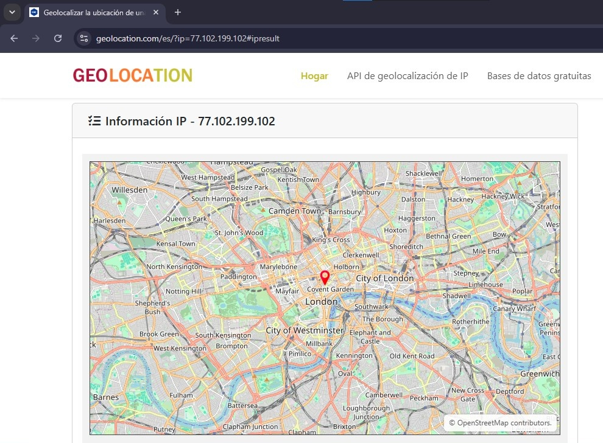
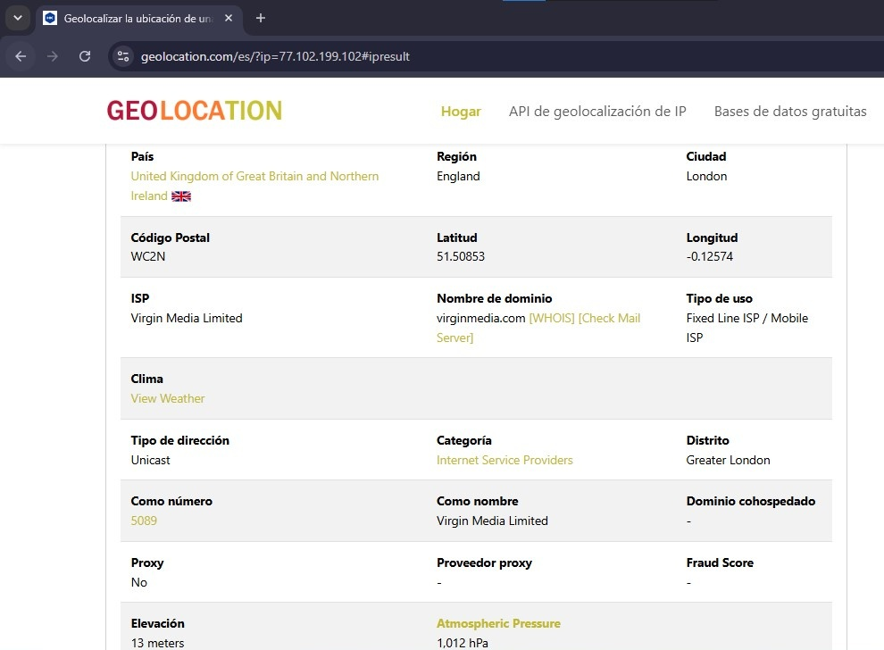
| Dato | Valor |
|---|---|
| País / región / ciudad | Reino Unido / Inglaterra / Londres (Greater London) |
| Código postal | WC2N (zona de Covent Garden) |
| Latitud / longitud | 51.50853 / -0.12574 |
| ISP / ASN | Virgin Media Limited / AS5089 |
| Tipo de uso / proxy | Línea fija o móvil de un ISP / sin proxy detectado |
Punto 9. Correos electrónicos
Los correos se buscaron filtrando las cadenas de texto de toda la memoria con strings y grep (figura 16):
strings /media/sf_Actividad_17/OtterCTF/OtterCTF.vmem | grep -i "@mail.com"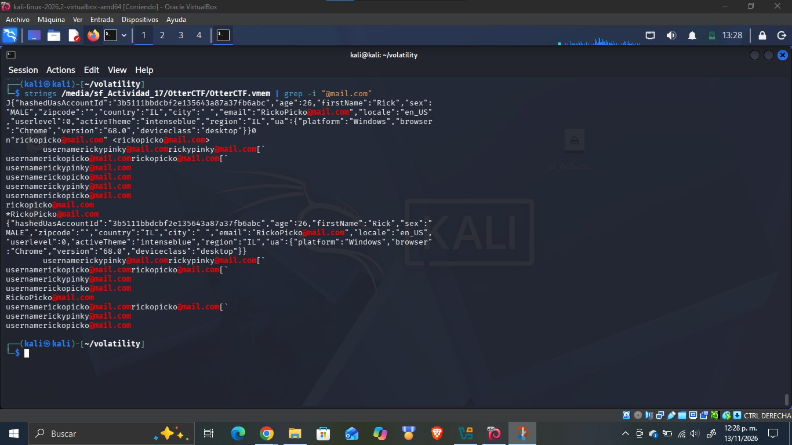
Cómo funciona. strings extrae del volcado todas las secuencias de caracteres imprimibles y grep -i las filtra sin distinguir mayúsculas. Es un método simple que funciona porque el navegador deja en la RAM fragmentos de las páginas web y de sus datos de sesión mientras se usa.
Resultado. Los correos que aparecen son RickoPicko@mail.com (también como rickopicko@mail.com) y rickypinky@mail.com. En la sesión de correo hay un registro en formato JSON con los datos del usuario: nombre «Rick», 26 años, país y región «IL», idioma en_US, y el campo email con el valor RickoPicko@mail.com. Dentro del mismo registro, el campo ua (user agent) indica platform: «Windows», browser: «Chrome», version: «68.0» y deviceclass: «desktop».
Punto 10. Cartera de criptomoneda
El enunciado indica que el proceso 3720 (vmware-tray.exe) simula un programa legítimo y oculta un mensaje malicioso. Para analizarlo, primero se extrajo la memoria del proceso con memdump (figura 17):
python2 vol.py -f /media/sf_Actividad_17/OtterCTF/OtterCTF.vmem --profile=Win7SP1x64 memdump -p 3720 -D .
sudo python2 vol.py -f /media/sf_Actividad_17/OtterCTF/OtterCTF.vmem --profile=Win7SP1x64 memdump -p 3720 -D .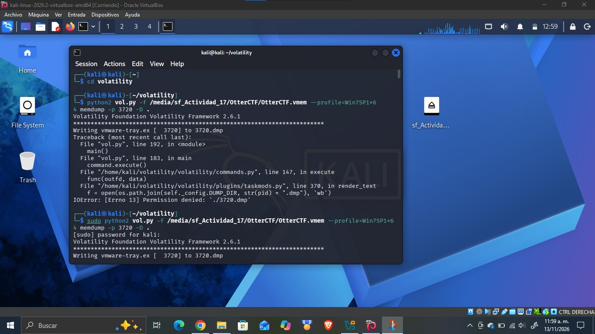
El primer comando falló con «IOError: [Errno 13] Permission denied: ./3720.dmp» porque la carpeta de volatility fue creada con sudo y el usuario normal no podía escribir en ella; se repitió con sudo y generó el archivo 3720.dmp. memdump guarda en un archivo todas las páginas de memoria direccionables del proceso (a diferencia de procdump, que extrae solo el ejecutable). Después se buscaron en ese archivo cadenas con el formato de una dirección de Bitcoin (figura 18):
strings -e l 3720.dmp | grep -E "1[a-km-zA-HJ-NP-Z1-9]{25,34}"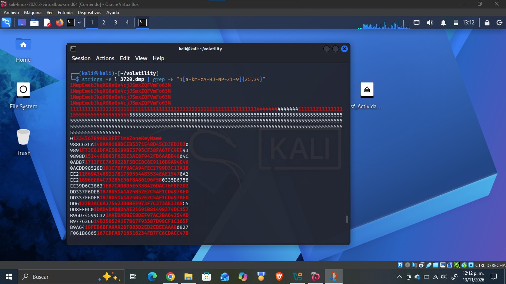
Por qué ese comando. La opción -e l hace que strings busque cadenas de 16 bits en little-endian (UTF-16LE), la codificación que usa Windows. La expresión regular describe una dirección Bitcoin clásica (P2PKH): comienza con 1, usa el alfabeto Base58, que excluye 0, O, I y l para evitar confusiones, y mide entre 26 y 35 caracteres. El resto de las líneas son falsos positivos: cadenas hexadecimales y repeticiones de dígitos que cumplen el patrón por casualidad.
Resultado. La cartera que aparece repetida es 1MmpEmebJkqXG8nQv4cjJSmxZQFVmFo63M. Como verificación adicional se comprobó su suma de control Base58Check, que resultó válida, por lo que es una dirección Bitcoin correctamente formada y no una cadena al azar. Después se consultó en BTC Black, una lista negra de direcciones Bitcoin abusivas (figura 19):
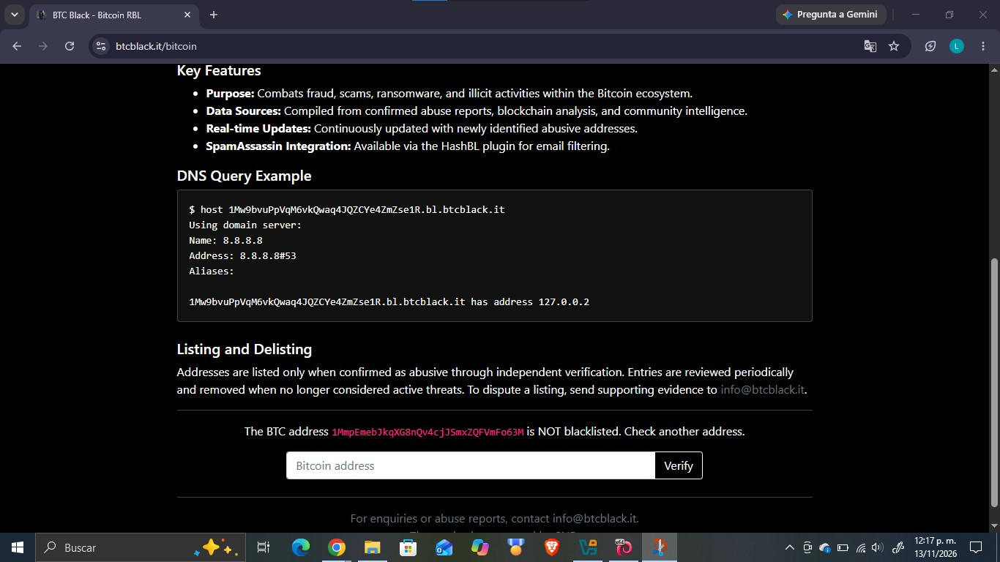
Resultados
Tabla de hallazgos (IOCs)
La tabla 5 consolida los artefactos encontrados en el análisis del volcado.
| Artefacto | Hallazgo | Comando |
|---|---|---|
| Archivo analizado | OtterCTF.vmem (2.0 GiB) | Carpeta compartida |
| Sistema operativo | Windows 7 SP1 de 64 bits (Win7SP1x64) | imageinfo |
| Hora de la captura | 2018-08-04 19:34:22 UTC (22:34:22 +0300) | imageinfo |
| Cuentas locales | Administrator (500), Guest (501), Rick (1000) | hashdump |
| Hash NTLM de Rick | 518172d012f97d3a8fcc089615283940 | hashdump |
| Contraseña de Rick | MortyIsReallyAnOtter | lsadump |
| IP del equipo | 192.168.202.131 | netscan |
| Nombre del equipo | WIN-LO6FAF3DTFE | printkey |
| Procesos clave | vmware-tray.exe (3720), LunarMS.exe (708), BitTorrent.exe (2836) | pstree |
| Servidor remoto | 77.102.199.102:7575 (Londres, Virgin Media) | netscan, geolocation.com |
| Correos | RickoPicko@mail.com, rickypinky@mail.com | strings + grep |
| Plataforma y navegador | mail.com; Windows con Chrome 68.0 | strings + grep |
| Cartera BTC | 1MmpEmebJkqXG8nQv4cjJSmxZQFVmFo63M (no está en BTC Black) | memdump + strings |
Análisis y correlación con el caso
Los hallazgos coinciden con las hipótesis del caso y se refuerzan entre sí:
Identidad. El alias «Morty» aparece en la contraseña MortyIsReallyAnOtter del único usuario real del equipo, Rick. El nombre «Ricky» del comentario en Telegram se parece al correo rickypinky@mail.com y al usuario Rick, lo que sugiere (como hipótesis) que una misma persona usa varias identidades.
Equipo e infraestructura. El nombre del equipo, WIN-LO6FAF3DTFE, contiene las iniciales FAF3 (SEDENE) y TFE (CNDI) proporcionadas por inteligencia, lo que vincula el equipo con el caso. LunarMS.exe, que se conecta a 77.102.199.102:7575, se relaciona con los servidores «Lunar» que se emplean para publicitar a las víctimas.
Rescate y distribución. BitTorrent.exe y sus procesos hijos mantienen muchas conexiones a pares, lo cual es compatible con la sospecha de que el cibercriminal distribuye videos por Torrent. El proceso vmware-tray.exe (3720) suplanta una utilidad legítima, fue lanzado por «Rick And Morty» y contiene en su memoria la cartera 1MmpEmebJkqXG8nQv4cjJSmxZQFVmFo63M, que sería la cartera donde se piden pagos. Esto es coherente con el comentario del canal de Telegram sobre el pago de 0.0000043 BTC a una cartera del usuario «Ricky».
Con las horas de inicio de los procesos se puede reconstruir la secuencia de lo que ocurrió en el equipo antes de la captura (tabla 6).
| Hora (UTC) | Evento | Fuente |
|---|---|---|
19:26:03 | Inicio del sistema (proceso System) | pstree |
19:27:04 | Se inicia explorer.exe: sesión de Rick en el escritorio | pstree |
19:27:07 | Se ejecuta BitTorrent.exe | pstree |
19:27:39 | Se ejecuta LunarMS.exe | pstree |
19:29:30 | Se abre Google Chrome | pstree |
19:32:55 | Se ejecuta el programa «Rick And Morty» (PID 3820) | pstree |
19:33:02 | «Rick And Morty» lanza vmware-tray.exe (PID 3720) | pstree |
19:34:22 | Captura de la memoria | imageinfo |
Un dato importante es que vmware-tray.exe se inició solo siete segundos después de «Rick And Morty», y la captura se hizo apenas 80 segundos después. Esto indica una ejecución muy reciente, y es la razón por la que el mensaje malicioso y la cartera seguían en la RAM.
Líneas de investigación y recomendaciones
Con la evidencia obtenida se proponen las líneas de investigación y recomendaciones de la tabla 7.
| N.º | Línea | Acción propuesta |
|---|---|---|
| 1 | Preservar la evidencia | Calcular el hash (MD5 y SHA-256) del archivo OtterCTF.vmem, mantener la cadena de custodia y trabajar siempre sobre copias. |
| 2 | Analizar el proceso 3720 | Revisar su ejecutable y su origen con malfind, cmdline, dlllist y filescan; extraer el binario con procdump y comparar su hash con bases de malware (por ejemplo, VirusTotal). |
| 3 | Rastrear la cartera BTC | Consultar las transacciones de 1MmpEmebJkqXG8nQv4cjJSmxZQFVmFo63M en un explorador de bloques, buscar pagos de 0.0000043 BTC y, mediante la autoridad, solicitar datos a los exchanges involucrados. |
| 4 | Investigar la infraestructura | Hacer WHOIS del IP 77.102.199.102 (AS5089), pedir información al proveedor mediante vía legal y revisar los demás pares y servidores de netscan; bloquear estos indicadores en el firewall. |
| 5 | Cuentas de correo | Pedir a mail.com la preservación y entrega de datos de RickoPicko@mail.com y rickypinky@mail.com, y compararlas con el usuario «Ricky» del canal de Telegram y con el enlace de Reddit. |
| 6 | Persistencia y actividad en el Registro | Extraer con printkey y userassist las llaves de inicio automático y los programas ejecutados por Rick en NTUSER.DAT para saber cómo se instaló el software. |
| 7 | Prevención | Desactivar el inicio de sesión automático (que guarda la contraseña en la LSA), usar contraseñas robustas, y no instalar software de origen no confiable como WebCompanion. |
Conclusión
El análisis del volcado OtterCTF.vmem con Volatility permitió, a partir de una sola captura de la memoria, reconstruir la actividad del equipo del presunto cibercriminal: un Windows 7 SP1 de 64 bits con zona horaria UTC+3, un usuario Rick con inicio de sesión automático y contraseña MortyIsReallyAnOtter, el equipo WIN-LO6FAF3DTFE, conexiones hacia 77.102.199.102:7575 (Londres), un cliente BitTorrent, correos en mail.com abiertos con Chrome 68.0 y un proceso suplantado (vmware-tray.exe) que guarda la cartera BTC 1MmpEmebJkqXG8nQv4cjJSmxZQFVmFo63M. Cada dato fue obtenido con un comando visible y verificado: el hash NTLM coincide con la contraseña y la cartera tiene una suma de control válida.
Este caso muestra por qué la memoria volátil es una evidencia clave: contiene contraseñas en claro, conexiones ya cerradas, procesos y fragmentos del navegador que no existen en disco. Como limitaciones, los resultados provienen de un solo instante; la hora del sistema y la geolocalización por IP son aproximadas y pueden alterarse; las coincidencias de nombres (Ricky, FAF3, TFE) son hipótesis que deben corroborarse con otras fuentes; y que la cartera no esté en BTC Black no prueba que sea legítima. Además, Volatility 2 depende de Python 2, ya obsoleto, por lo que en trabajos futuros conviene usar Volatility 3.
Referencias bibliográficas
- Brezinski, D., & Killalea, T. (2002). Guidelines for evidence collection and archiving (RFC 3227). Internet Engineering Task Force. https://www.rfc-editor.org/rfc/rfc3227
- Kent, K., Chevalier, S., Grance, T., & Dang, H. (2006). Guide to integrating forensic techniques into incident response (NIST Special Publication 800-86). National Institute of Standards and Technology. https://csrc.nist.gov/pubs/sp/800/86/final
- Ligh, M. H., Case, A., Levy, J., & Walters, A. (2014). The art of memory forensics: Detecting malware and threats in Windows, Linux, and Mac memory. Wiley.
- Microsoft. (s. f.). Structure of the registry. Microsoft Learn. https://learn.microsoft.com/en-us/windows/win32/sysinfo/structure-of-the-registry
- MITRE. (s. f.). Masquerading (T1036). MITRE ATT&CK. https://attack.mitre.org/techniques/T1036/
- Bitcoin Wiki. (s. f.). Technical background of version 1 Bitcoin addresses. https://en.bitcoin.it/wiki/Technical_background_of_version_1_Bitcoin_addresses
- Volatility Foundation. (s. f.). Volatility Framework 2.6.1 [Software]. GitHub. https://github.com/volatilityfoundation/volatility
- Volatility Foundation. (s. f.). Command reference (Volatility 2). GitHub Wiki. https://github.com/volatilityfoundation/volatility/wiki/Command-Reference